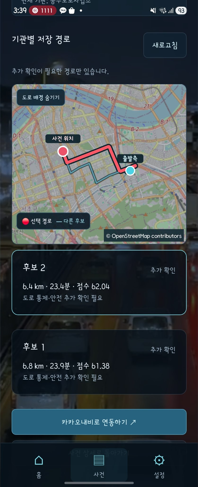

01 / FINAL PROJECT · 2인 팀
OCTV
CCTV 재난 탐지 이후 외부 상황을 분석하고, 위험도·기관·경로를 추천하는 재난 대응 지원 서비스.
이민재 담당
판단·대응 Backend / 외부 데이터 / 알림 / 통합·배포 / CCTV 적응학습
운영 웹의 실제 녹화입니다. DEMO CCTV와 시나리오 값이 포함되어 있으며 실제 도로의 현재 재난·출동 결과를 의미하지 않습니다.
01
CCTV 영상에서 재난 탐지 결과를 확인합니다
침수 시연 영상 위에서 flood 탐지 박스와 신뢰도를 확인합니다. YOLO 탐지·시간 검증·사건화는 팀원 담당이며, 저는 CCTV 적응학습과 통합·운영 연결에 참여했습니다.
02
생성된 사건을 지도와 목록에서 조회합니다
탐지로 생성된 사건을 지도와 P1·P2 목록에서 선택하고 탐지 근거를 조회합니다. 저는 사건 저장·조회 API와 판단 파이프라인 연결을 담당했습니다.
03
외부 상황을 근거로 위험도와 우선순위를 판단합니다
기상·수위·교통 정보를 정규화하고 확인된 값만 Rule에 반영합니다. LangGraph가 분석 순서를 연결하며, 미확인 정보는 별도로 남깁니다.
04
대응 기관과 후보 경로를 비교합니다
기관 역할·관할·접근성을 평가하고 후보 경로의 거리·시간·점수를 비교합니다. 최종 기관 선택과 정보 전달은 상황실 관리자가 수행합니다.
BACKEND IMPLEMENTATION
기관 전달과 실제 알림 발송을 분리했습니다
전달 결과와 DB 알림을 저장한 뒤 Celery Worker가 FCM 발송을 처리합니다. Redis 잠금·기기별 결과 기록으로 중복 발송을 억제하고 실패한 기기만 재시도합니다.
기관 전달 후 모바일 푸시가 수신되는 동영상은 확보되지 않았습니다. 아래는 제공받은 실제 모바일 실행 캡처입니다.

